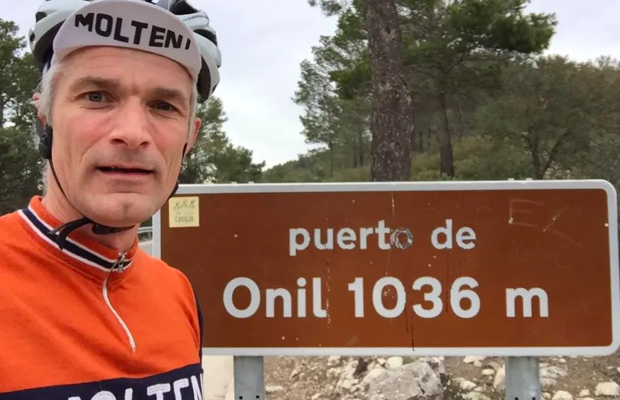

Her, der og alle vegne…

Squadra Molteni har travlt. Grane “Wunderbein” Maaløe er på en kombineret højde- og watttræning i Spanien. Løjtnant Kasper Sørensen er på højdetræning og reklamefilmoptagelser i de italienske alper. Og Jens Langergaard kører EIIT-træning med Rasmus Quaade.
Holdets hårdtarbejdende domestique Jens Langergaard har kørt godt 15 cykelcrossløb vinteren over. Det har sat sig lidt i benene. Derfor valgte Squadra Moltenis HQ at sende ham på en intensiv træninglejr med Rasmus Quaade.
Han havde tunge ben – og der skulle køres noget fart i de stænger – det kunne kun gå for langsomt, fortæller Rasmus Quaade. Jeg har levet et Ekstreme Intensive Interval Training (EIIT) forløb for Jens, og det virker allerede. Jeg kan forsikre for, at han kommer til at udradere både Peugeot og K-Werk på lørdag.
Holdets sprinter Grane “Wunderbein” Maaløe lå langt under niveau efter en lang vinter, som hovedsageligt er brugt under en Citroen HY med en lægtehammer i den ene hånd og en bøtte antirustmaling i den anden.

Jeg har ligget og banket rust på holdets kommende teambus hele vinteren – så jeg blev sendt på en kombineret højde- og watttræning i Spanien, fortæller Grane, der allerede efter 2,5 dage nåede at komme i topform.
Jeg er top klar til sæsonstarten på lørdag, forsikrer Grane, der fik målt 1477 Watt over 5 minutter op af Puerto de Onil unden for Alicante.
Det viste sig ved Squadra Moltenis træningssamling i begyndelsen af marts, at Løjtnant Kasper Sørensen havde en hæmatokrit på 48.
Man altså ikke starte sæsonen med en hæmatokrit på sølle 48. Derfor sendte jeg Kasper på højdetræning i de italienske alper, fortæller holdlæge Finn Birk.
Da Kasper alligevel var i Italien, fik han også en sponsorforpligtelsesopgave. Nemlig at være hovedperson i vores Molteni Alimentari’s nye reklamefilm.
Det er blevet en flot reklamefilm. En kvalitets produktion fra Berlusconi’s eget reklamefilmsselskab. Molteni Alimentari er yderst tilfredse, og vi får også sendt 10 kasser af Moltenis nye energipølser til Squadra Moltenis HQ i Danmark, fortæller holdkaptajn Niels Bjørnsteen.
Desværre når Kasper ikke at komme hjem til sæsonstart på lørdag, da kaspers ledsagerske Maria Winther og Kasper, er inviteret til cocktail-party hos selveste Berlusconi lørdag aften.